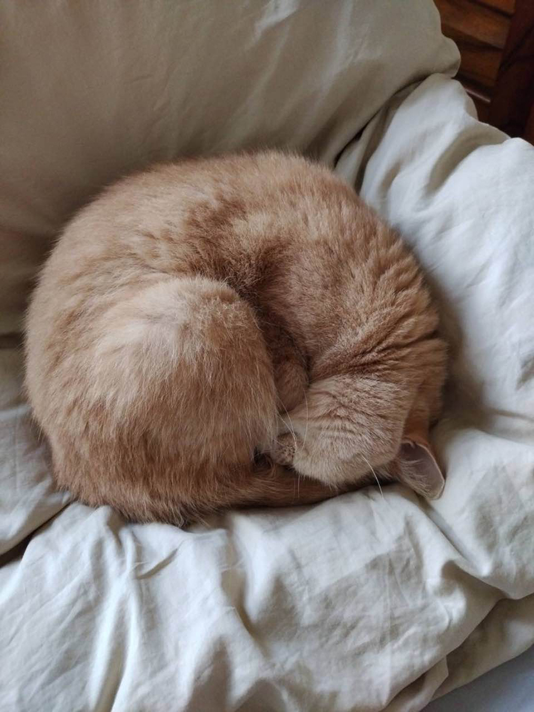
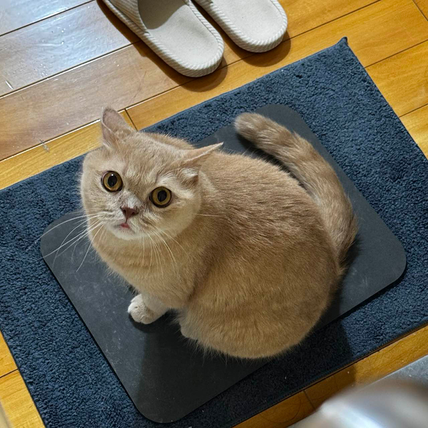
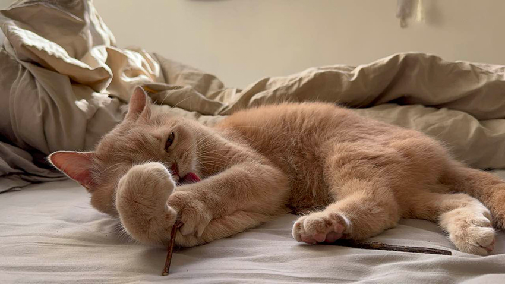

一毛的生活哲學：吃好、睡飽、愛你到老
楊宜儒│電子技術處＼安規環保無線認證部
有一位不折不扣的「奶油小生」，每天用最溫柔的方式征服我的心——他叫做「一毛」，是一隻十一歲的英國短毛貓。別看他年紀不小，黏人的功力可是滿級等級。每天出門上班的時候，他總是默默地送我到門口，接著透過監視器，我就能看到那雙圓滾滾的大眼睛，痴痴地望著門，一副「我等你回家」的模樣，療癒力直逼貓界偶像。
一毛的日常大約可以用「吃吃、睡睡、等人回家」來形容。早上他是小懶豬，安心補眠，但接近下班時間，他就會自動切換成「貼心接機貓」模式，靜靜守在門邊。只要聽到開門的「喀啦」一聲，立刻咚咚咚衝過來迎接，彷彿在說：「你終於回來了～」那一刻，所有的上班疲勞都被融化。
周末早晨是一毛最幸福的時光。當我喊：「一毛～來抱抱～」他會立刻優雅（但有點笨拙）地走過來，窩進懷裡開始「呼嚕呼嚕」，像一台開心的小馬達。除此之外，每天晚上是我們的「例行推推時間」，他會乖乖在我身上，使出專業的小推拿，還會發出呼嚕呼嚕的聲音，滿臉享受與幸福。
雖然可愛，但這位奶油小生在飲食上可是出了名的挑剔。至今已經嚐遍將近二十款罐罐，還是常常「挑三揀四」。不愛吃的時候，還得用小湯匙一口一口餵，就像餵小寶寶一樣。只要聽到櫃子打開的聲音，他的雷達就會立刻啟動，像小火箭一樣衝過來，因為他知道——肉泥跟凍乾正在等他。
一毛陪伴我走過了許多日子，從稚嫩的小貓變成穩重的暖男。希望一毛小寶貝能繼續用他「呼嚕呼嚕」的溫暖，陪我度過更多個晨昏。因為對我來說，他不只是一隻貓，更是永遠的家人。💛
|  |
|  |
|  |